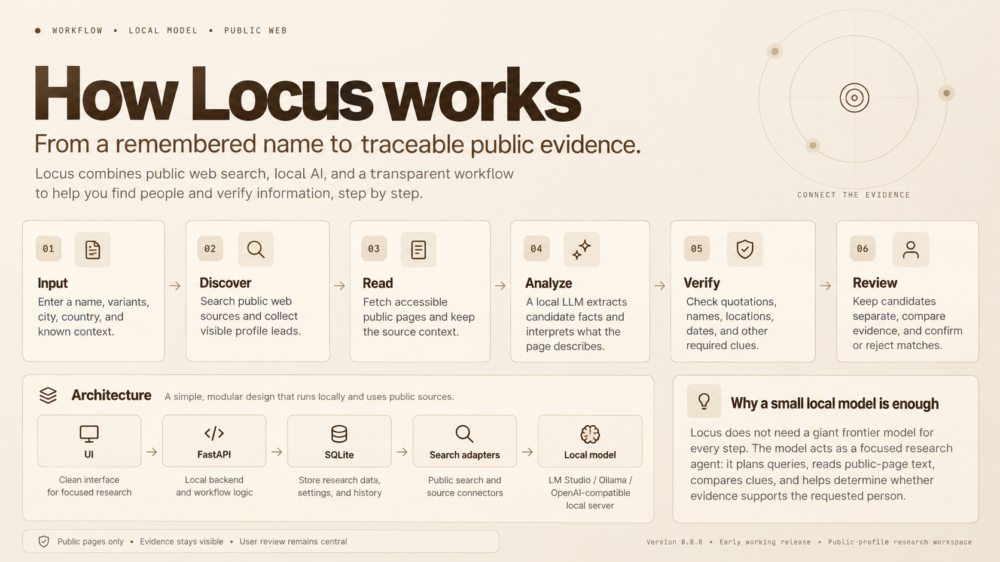
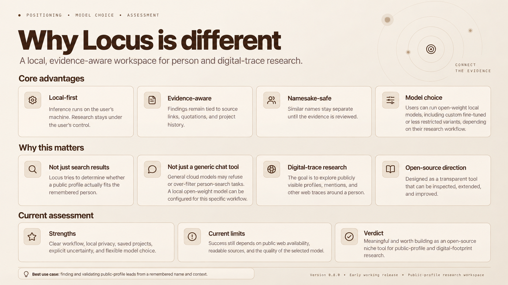

{kind=link}
Context mattersКонтекст имеет значение
Start with a name, a city, a country or a remembered detail. Compare the evidence against those clues.Начните с имени, города, страны или знакомой детали. Сравнивайте найденное с исходными сведениями.
Find public profiles and mentions. Follow the sources. Build a clearer picture with AI running on your own computer.Ищите публичные профили и упоминания. Изучайте источники. Собирайте сведения с помощью ИИ на своём компьютере.
Get Locus — freeСкачать Locus бесплатно ↗No Locus subscription. MIT-licensed code.Без подписки Locus. Код под лицензией MIT.Start with a name, a city, a country or a remembered detail. Compare the evidence against those clues.Начните с имени, города, страны или знакомой детали. Сравнивайте найденное с исходными сведениями.
Connect LM Studio, Ollama or a compatible local server. Model inference and saved research stay on your computer.Подключите LM Studio, Ollama или совместимый локальный сервер. Модель и сохранённые проекты работают на вашем компьютере.
Keep source links, review candidates, add a new clue and continue within a budget you control. Export the results when you need them.Сохраняйте источники, проверяйте кандидатов, добавляйте зацепки и продолжайте поиск с заданными лимитами. Экспортируйте результаты.
Search spelling variants and public web sources.Поиск вариантов написания имени и открытых источников.
Read accessible pages and retain their source context.Чтение доступных страниц с сохранением контекста.
A local model extracts observations and helps plan follow-up queries.Локальная модель извлекает сведения и помогает планировать следующие запросы.
Compare clues, keep namesakes separate and decide what fits.Сопоставление зацепок, разделение однофамильцев и ваша проверка результата.
A shared name is a lead, not a confirmed identity. Missing evidence and conflicting information remain visible for review.Совпадение имени — зацепка, а не подтверждение личности. Недостающие сведения и противоречия остаются видимыми для проверки.
Three visual guides to the product, its workflow and its approach. Presentation illustrations; the interface may evolve between releases.Три визуальных обзора: продукт, процесс работы и подход. Это презентационные иллюстрации; интерфейс может меняться между выпусками.


Model choice affects speed and extraction quality; small-model performance is not guaranteed. Search quality depends on readable public sources. Locus is an early release, with no claim of complete coverage or market-leading accuracy.Выбор модели влияет на скорость и качество анализа; результат на маленьких моделях не гарантирован. Поиск зависит от доступности открытых страниц. Locus — ранняя версия: полнота охвата и превосходство над другими сервисами не заявляются.
Download the source release, follow the setup guide and connect your local model. The app opens in your browser.Скачайте исходники, выполните инструкцию установки и подключите локальную модель. Приложение откроется в браузере.
This website is a presentation, not the search application. Locus needs a local Python service, a compatible local model server and internet access for web search. Source installation requires Python 3.11–3.14 and Node.js 22.12+. Model weights and runtime dependencies are installed separately.Это презентационный сайт, а не поисковое приложение. Locus нужны локальный Python-сервис, сервер локальной модели и интернет для веб-поиска. Для установки из исходников нужны Python 3.11–3.14 и Node.js 22.12+. Модель и зависимости устанавливаются отдельно.
AI inference runs locally; search queries and page requests are sent to the selected public web services. Free search access can be limited or blocked by those services.ИИ работает локально; поисковые запросы и обращения к страницам передаются выбранным веб-сервисам. Они могут ограничивать или блокировать бесплатный доступ.
{kind=link}
{kind=link}